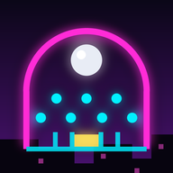
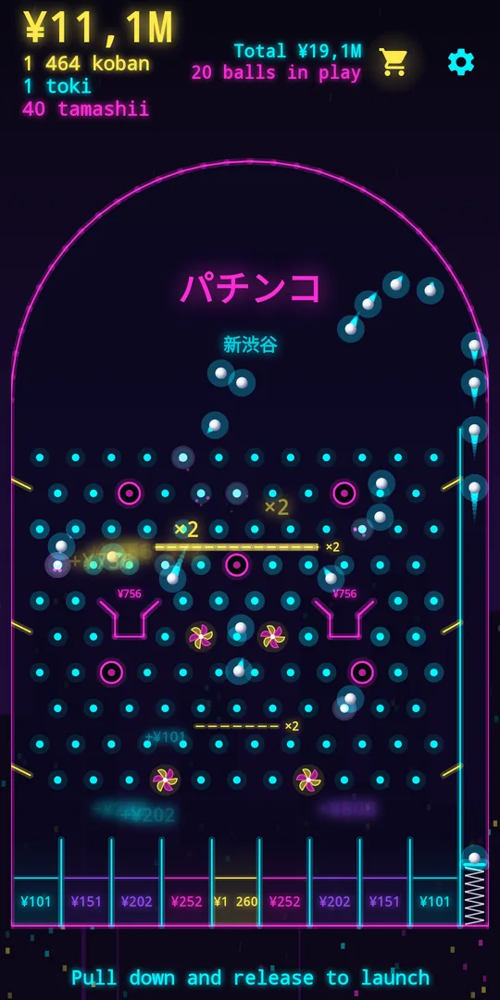
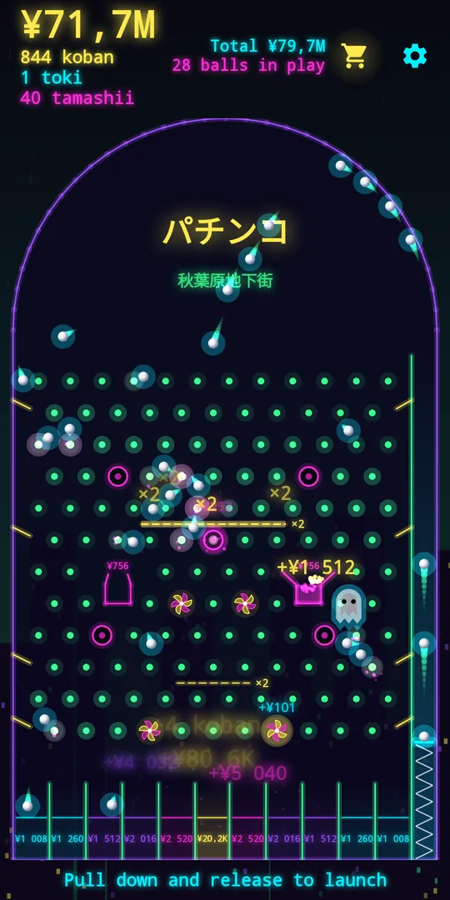
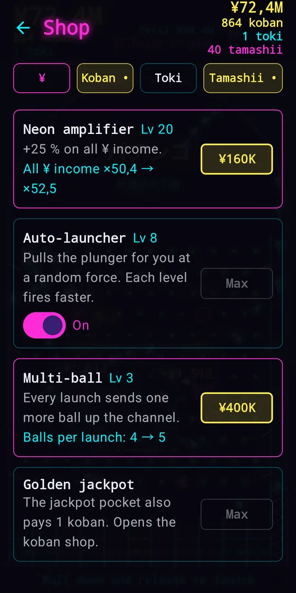
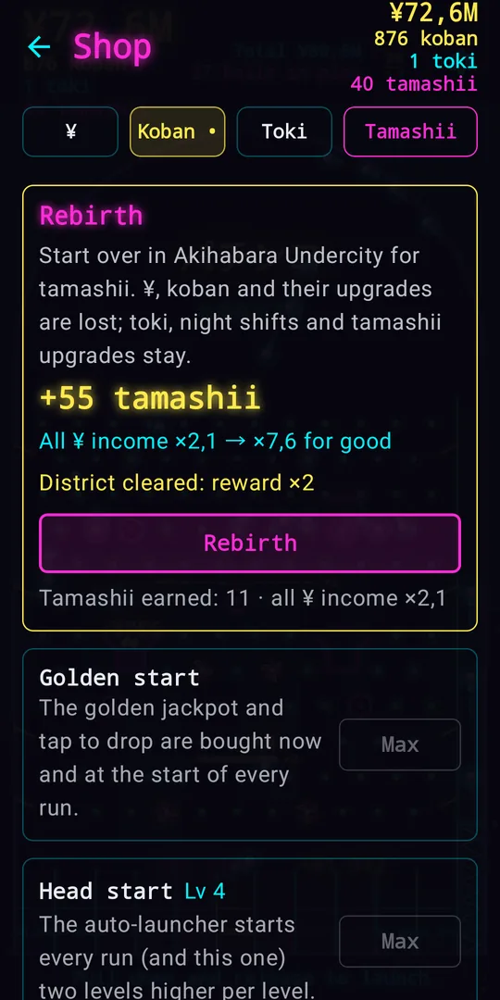
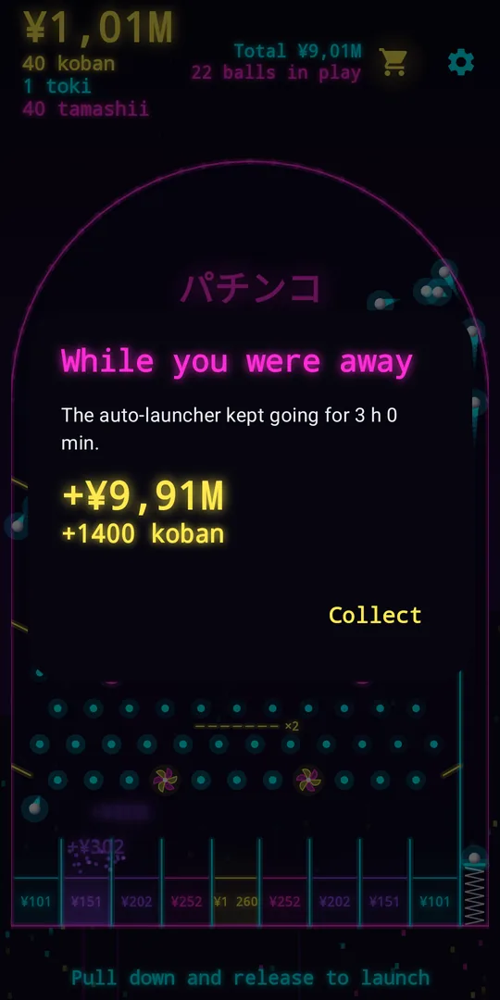

Neon Pachinko Nights
Pachinko that keeps on paying. An offline idle game for Android.
- No ads
- No in-app purchases
- No account
- No data collected
- Works offline





Pull the plunger, let go, and watch a silver ball bounce through a glowing neon pachinko board. Every pocket pays. Upgrade the board, automate the launches and see the numbers climb into the trillions.
Build your board
- Bumpers, multiplier gates, tulip cups with wings, a wider jackpot and spinning kazaguruma
- An auto-launcher, multi-ball, the beckoning maneki-neko and neon amplifiers
- Catch the yūrei, a ghost hologram that drifts across the board, for bursts and boosts
Keeps earning while you're away
- The auto-launcher works while the game is closed; collect when you come back
- Rebirth for tamashii and permanent bonuses, then move on to a new district
Easy on your battery
- Graphics quality setting, and Low graphics automatically in battery saver
- The game stops drawing when nothing moves
Not gambling
Launching a ball is free. Nothing is wagered and nothing can be won: the yen in the game can't be bought or cashed out.